npm install ards-client
Copy to Clipboard
About
ards-client is an npm module that allows you to get posts from Reddit, Danbooru, Konachan, rule34 and Yande.re, very easily.
Statistics
3000 downloads
0 stars
0 open issues
0 contributors
0 forks